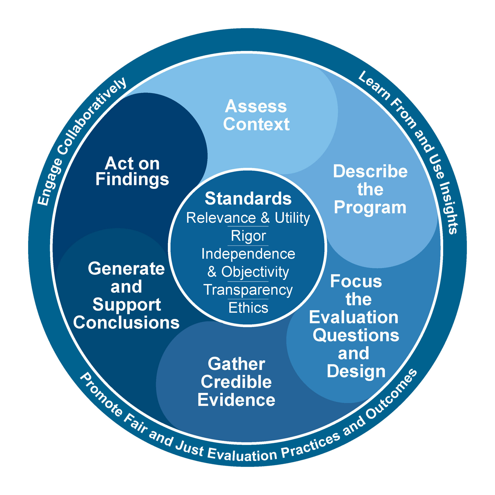
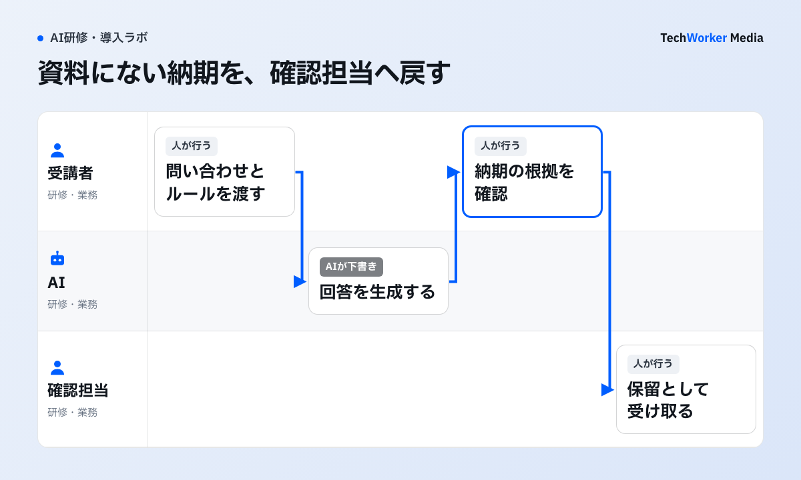

講師と同じ指示文を入力できても、自分の仕事で使えるとは限りません。演習では実務に近い課題を用意し、出力のどこを確かめるかまで練習します。CDCの評価図を手がかりに、課題と採点基準を組み立てます。
米CDCの評価図から、演習で確かめる行動を決める

図の6段階のうち、演習設計では「評価質問と設計を絞る」「信頼できる証拠を集める」を使います。操作完了だけでなく、根拠確認と修正判断を観察できる課題にします。
生成AI研修の演習は、どう作れば実務へ移せますか？
実際の入力、完成条件、採点表、振り返りをそろえ、複数の参加方法を用意します。
CDC Quality Training Standardsの『使いやすさとアクセシビリティ（usability and accessibility）』を、教材形式、キーボード操作、読み上げ、制限時間、支援窓口の確認項目へ落とします。配慮事項を申告した人だけの別教材にせず、標準教材で選べる参加方法を用意します。
一つの演習は、どんな手順で組み立てますか？
入力、生成、判断、修正の4段階に分け、最後に確認行動を採点します。出力は採用、要修正、利用中止に分類します。

問い合わせ10件のうち、資料に納期がない一件を含めます。受講者は、AIが補った納期を見つけ、原資料へ戻り、確認担当へ保留として渡します。文章の巧さより、この確認と引き継ぎを採点します。これは教材の設計例です。
- 入力：安全な教材データを用意します。実データを匿名化したつもりでも、固有の案件名、日時、少数の属性を組み合わせれば、個人や顧客を推測できることがあります。教材の目的に必要な項目だけを残します。氏名、メールアドレス、顧客番号、契約金額などは、架空値へ置き換えるか削除します。置き換え表を作る場合は、研修終了後に消せる保管場所と担当者を決めます。教材は、現実の文章を丸ごとコピーしません。業務上の制約、判断の分岐、よくある誤り、正解にならない例を残した、小さなケースにします。
- 生成：同じ課題に複数の指示を試します。完成済みのプロンプトを配るだけでは、条件を変えたときの挙動を学べません。目的、対象読者、制約、出力形式、確認事項を一つずつ変え、結果の差を比較します。「情報が不足しているときは質問を返す」「根拠がない推測を明示する」といった条件も入れます。
- 判断：出力を採用・要修正・利用中止に分けます。採点を文章の上手さだけにすると、もっともらしい誤りを見落とします。受講者は、事実確認が必要な箇所、社内規程との不一致、顧客への約束になり得る表現、機密情報の混入を色分けします。分類の理由は、一行で書かせます。
- 修正：人が業務成果物へ戻します。出力をそのまま提出させず、元の業務様式へ戻します。誰がレビューするか、何を根拠として確認するか、修正履歴をどこへ残すかまで記録します。到達点は、担当者が責任ある成果物に変換できることです。
- 評価表で、確認行動を採点します。一度で正しい回答を出せたかだけを採点すると、偶然の成功を技能と誤認します。提出物、確認コメント、差し戻し理由を残せば、どの判断が難しかったかを次の課題へ反映できます。
評価表の観点は、次の5つです。
- 入力データの利用可否と不足情報を確認したか
- 目的・対象者・制約・形式を指示に含めたか
- 出力の事実、数字、引用、個人情報を確認したか
- 不確かな箇所を保留し、適切な担当者へ戻したか
- 修正前後と採用理由を記録したか
生成AI研修の演習で、うまくいかない例にはどんなものがありますか？
プロンプト練習で終える、文章の上手さで採点する、本番データを初回から使う、模擬データを万能と考える、の4つです。
- 完成済みのプロンプトを配って終える。条件を変えたときの挙動を学べません。
- 文章の上手さだけで採点する。もっともらしい誤りを見落とします。
- 本番データを初回から使う。漏えい、目的外利用、保存先の問題が増えます。限定された本番データは、承認された環境で、目的・権限・保存・削除を確認した場合だけ使います。
- 匿名化や架空化をしたから安全と結論する。NISTの生成AIプロファイルは、生成AIの固有リスクを、組織の目標に沿って識別・評価・管理するための補助資料です。教材データも、機密性に加えて、誤出力、偏り、追跡不能な変更、利用者が過信するリスクを洗い出します。
- 模擬データで本番のリスクを再現できたと考える。架空データは、本番の例外、権限、部署間の調整、最新情報の欠落を、完全には再現しません。初回は模擬データで判断の型を練習し、承認済みの限定環境でのみ次段階へ進みます。
- 演習で正解したことを、成果や法令順守の証明とする。AI規則、社内規程、契約、個人情報の扱いは、利用地域・業務・製品条件で変わります。必要に応じて、法務・情報セキュリティと確認します。
利用率や満足度だけで成功とせず、業務で安全に再現できるかを、次の小さな検証へつなげます。
教材データは、どんな段階に分けて管理しますか？
例示、構造化した模擬、限定された本番の3段階で管理します。本番データは初回から使いません。
研修用データは、実データか架空データかの二択ではありません。次の三段階を使い分けます。
| 段階 | 内容 | 使いどころ |
|---|---|---|
| 例示データ | 完全に架空の短い例 | 初学者が、操作と確認の型を学ぶ |
| 構造化した模擬データ | 実務の項目、分岐、誤りを再現するが、個人や顧客を特定できない | 業務演習の中心にする |
| 限定された本番データ | 承認された環境で、利用目的・権限・保存・削除を確認した場合だけ使う | 研修の初回から使わない |
演習の教材や研修サービスは、どんな軸で比べればよいですか？
教材へ何を持ち込めるか、操作を記録できるか、自社業務へ課題を差し替えられるかで比べます。
市場には、短時間の汎用eラーニング、特定製品の公式学習、講師付きの業務研修、導入後の伴走支援があります。優劣を一律には決めません。比較の軸は、次の3つです。教材へ何を持ち込めるか、受講者の操作をどこまで記録できるか、管理者が課題を自社業務へ差し替えられるかです。
Microsoft LearnのMicrosoft 365 Copilot向け学習パスは、製品環境で演習を行う構成です。営業、財務、IT、人事などのユースケースがあります。実際のライセンスやOneDriveが前提になります。製品操作の習得には向きます。全社共通の判断規程や、他製品を含む利用基準を、自動で教えるものではありません。公式教材を使う場合も、自社の架空ケースと確認表を追加します。
英国のSkills Englandは、「What works for AI upskilling」をまとめています。AI人材育成の調査・事例・実務原則です。包摂的で安全かつ持続可能な育成が主題です。対象者の条件、現場の支援、継続的な改善を設計する視点が得られます。
国内では、デジタル庁のガイドラインが、生成AIの活用促進とリスク管理を表裏一体で進める考え方を示しています。行政向け資料を、民間企業の法的判断へそのまま転用しません。
次の一歩は何から始めればよいですか？
架空の問い合わせ10件と回答ルールを用意し、90分の一ケースで試すことから始めます。
- 架空の問い合わせ10件と、社内の回答ルールを用意します。
- 受講者が要約を生成し、根拠と不明点を色分けします。
- 誤った納期、禁止表現、根拠のない補完を、一つ以上混ぜます。
- 受講者が採用・修正・保留を選び、確認者へ回します。
- 講師が、出力の巧拙でなく確認行動と記録を講評します。
演習後は、課題の難しさ、データの不足、確認者の負荷、研修では解けなかったルールを記録します。
自社の業務と利用環境に合わせた演習設計、評価表、定着支援をまとめて見直したい場合は、ご相談ください。実データを配るかの議論で止めず、業務の分岐、確認者、失敗例、記録方法を一つの課題に落とします。
出典・確認範囲（確認日：2026年9月9日）
| 一次情報 | 発行日 | 根拠箇所・用途 |
|---|---|---|
| Skills England「AI foundation skills for work benchmark」 | 2026-01-28 | 技術・非技術・責任倫理の3領域と6基礎技能。 |
| 欧州連合「Regulation (EU) 2024/1689」Article 4 | 2024-07-12（統合版確認 2026-07-27） | 利用文脈・経験等を踏まえたAIリテラシー支援。日本法への直接適用ではない。 |
| NIST「AI Risk Management Framework: Generative AI Profile」 | 2024-07-26 | 生成AI固有リスクの識別・評価・管理。 |
| 英国DWP・Skills England「Skills for AI: What works for AI upskilling in the UK」 | 2026-06-10（更新 2026-07-27） | 包摂的で安全・持続可能なAI人材育成の研究・実務原則。 |
| Microsoft Learn「Empower your workforce with Microsoft 365 Copilot Use Cases」 | 日付明示なし | 製品環境で職種別ユースケース演習を行う公式学習パス。 |
| デジタル庁「生成AIの調達・利活用に係るガイドライン」 | 2025-05-27（更新 2025-06-13） | 活用促進とリスク管理を一体で扱う国内方針。最新版確認を要する。 |
出典と確認範囲
確認日：2026年10月6日。製品仕様・制度は更新されるため、導入時はリンク先の最新版を再確認してください。海外の制度・職業規範は日本へ直接適用せず、相違点と限界を本文に明記しています。